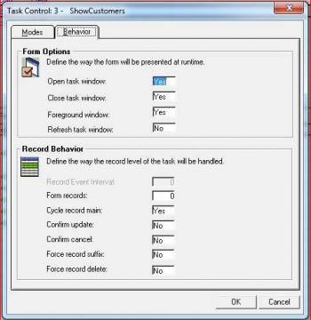

Comparison with Magic's Task Control Dialog Box
Introduction
This article is one of a series of articles aimed at providing further orientation with the migrated code for Magic programmers. This time we will look at the 'Task Control' (Control-C) screens as they appear in eDeveloper (version 9) and show the equivalent representation of its properties in the migrated code. Many of the properties have various options and we will also look at the different representations in the migrated code for each option.
There are two tabs for the Task Control dialog boxes in eDeveloper, with the following tags: Modes and Behavior. Let's look at each Tab separately.
Modes Tab
A screen shot of eDeveloper's Modes tab appears below:

The following notes explain the equivalent to these properties in the migrated code.
Allow Options
Name in Migrated Code: AllowActivitySwitch Location in Migrated Code: OnLoad Method Example:
AllowActivitySwitch = true;
Example with expression:
BindAllowActivitySwitch(()=>Exp_1());
Allow Modify
Name in Migrated Code: AllowUpdate Location in Migrated Code: OnLoad Method Example:
AllowUpdate = true;
Example with Expression:
BindAllowUpdate(()=>Exp_1());
Allow Create
Name in Migrated Code: AllowInsert Location in Migrated Code:OnLoad Method Example:
AllowInsert = true;
Example with Expression:
BindAllowInsert(()=>Exp_1());
Allow Delete
Name in Migrated Code: AllowDelete Location in Migrated Code: OnLoad Method Example:
AllowDelete = true;
Example with Expression:
BindAllowDelete(()=> Exp_1());
Allow Query
Name in Migrated Code: AllowBrowse Location in Migrated Code: OnLoad Method Example:
AllowBrowse = true;
Example with Expression:
BindAllowBrowse(()=>Exp_1());
Allow Locate
Name in Migrated Code: AllowFindRow Location in Migrated Code: OnLoad Method Example:
AllowFindRow = true;
Example with Expression:
BindAllowFindRow(()=>Exp_1());
Allow Range
Name in Migrated Code: AllowFilterRows Location in Migrated Code: OnLoad Method Example:
AllowFilterRows = true;
Example with Expression:
BindAllowFilterRows(()=>Exp_1());
Allow Index Change
Name in Migrated Code: AllowSelectOrderBy Location in Migrated Code: OnLoad Method
AllowSelectOrderBy = true;
Example with Expression:
BindAllowSelectOrderBy(()=>Exp_1());
Allow Sorting
Name in Migrated Code: AllowCustomOrderBy Location in Migrated Code: OnLoad Method Example:
AllowCustomOrderBy = true;
Example with Expression:
BindAllowCustomOrderBy(()=>Exp_1());
Allow Index Optimization
Name in Migrated Code: SortOnIncrementalSearch Location in Migrated Code: OnLoad Method Example:
SortOnIncrementalSearch = true;
Example with Expression:
BindSortOnIncrementalSearch(()=>Exp_1());
Allow Locate in Query
Name in Migrated Code: AllowIncrementalSearch Location in Migrated Code: OnLoad Method Example:
AllowIncrementalSearch = true;
Example with Expression:
BindAllowIncrementalSearch(()=>Exp_1());
Allow Printing Data
Name in Migrated Code: AllowExportData Location in Migrated Code: OnLoad Method Example:
AllowExportData = true;
Example with Expression:
BindAllowExportData(()=> Exp_1());
Behavior Tab
A screen shot of eDeveloper's Behavior tab appears below:

The following notes explain the equivalent to these properties in the migrated code.
Close Task Window
Name in Migrated Code: KeepViewVisibleAfterExit Location in Migrated Code: OnLoad Method Example:
KeepViewVisibleAfterExit = true;
if(NewViewRequired)
{
View = new UI.ShowOrders_Details_UI(this);
}
Example with Expression:
BindKeepViewVisibleAfterExit(()=>Exp_1());
if(NewViewRequired)
{
View = new UI.ShowOrders_Details_UI(this);
}
Note: This property works best in conjunction with CachedUIController To maintain the behavior of a window that is open for a task that is closed and the option to revisit the task.
Foreground Window
Name in Migrated Code: OnLoadSendToBack Location in Migrated Code: OnLoad Method Example:
if(NewViewRequired)
{
View = new UI.ShowProducts_UI(this);
View.OnLoadSendToBack = true;
}
Example with Expression:
if(NewViewRequired)
{
View = new UI.ShowProducts_UI(this);
View.BindOnLoadSendToBack (()=>Exp_1());
}
Refresh Task Window
Name in Migrated Code: ReloadDataAfterSavingRow Location in Migrated Code: OnLoad Method Example:
ReloadDataAfterSavingRow = true;
Example with Expression:
BindReloadDataAfterSavingRow(()=>Exp_1());
Cycle Record Main
Name in Migrated Code: GoToToNextRowAfterLastControl Location in Migrated Code: OnLoad Method Example:
GoToToNextRowAfterLastControl = true;
Example with Expression:
BindGoToToNextRowAfterLastControl(() =>!(Exp_1());
Confirm Update
Name in Migrated Code: ConfirmUpdate Location in Migrated Code: OnLoad Method Example:
ConfirmUpdate = true;
Example with Expression:
BindConfirmUpdate(() => !(Exp_1());
Note: Not many people know that in Magic to disable the Confirm Delete message box, you need to set the Confirm Update property to a false expression (1=0) as opposed to setting the Confirm Update to No, which will only disable the update message box. In the migrated code, the Confirm Delete message box is controlled by the ConfirmDelete Property and BindConfirmDelete Method .
Confirm Cancel
Name in Migrated Code: ConfirmCancel Location in Migrated Code: OnLoad Method Example:
ConfirmCancel = true;
Example with Expression:
BindConfirmCancel(()=>!(Exp_1());
Force Record Suffix
Name in Migrated Code: ForceSaveRow Location in Migrated Code: OnLoad Method Example:
ForceSaveRow=true;
Example with Expression:
BindForceSaveRow(()=>Exp_1());
Force Record Delete
Name in Migrated Code: DeleteRowAfterLeavingIt method Location in Migrated Code: OnLoad Method Example:
DeleteRowAfterLeavingItIf(()=>true);
Example with Expression:
DeleteRowAfterLeavingItIf(()=>Exp_1());